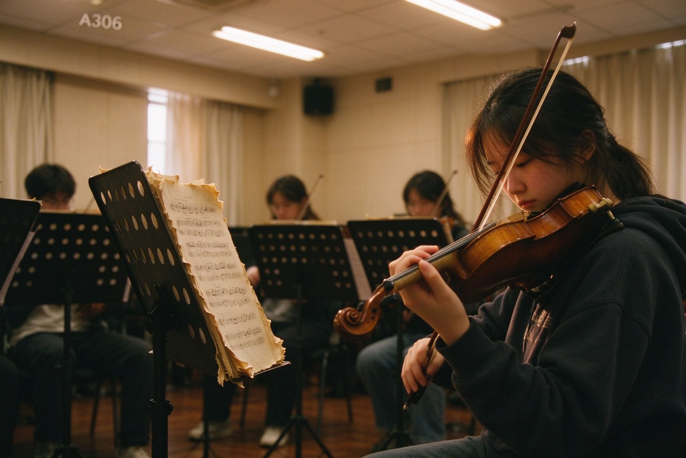
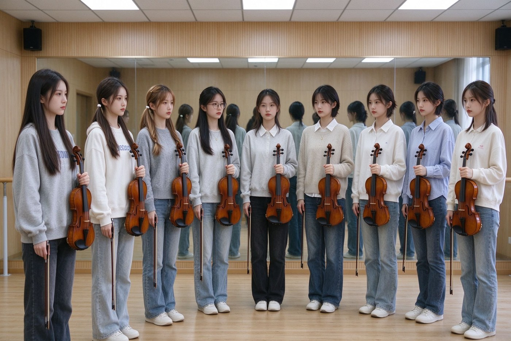
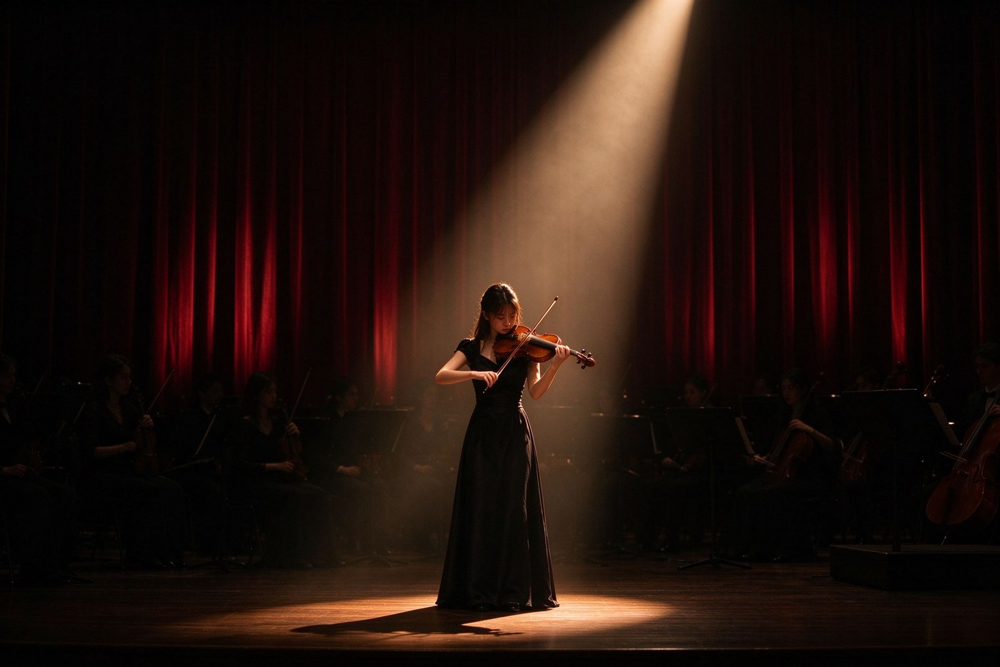

背景音乐：《梧桐下的少年》（海绵音乐 imastudent5 生成，时长 1 分 30 秒，循环播放；点播放键即可收听）。
让琴声有归处——从一把琴、一根弓、一次深呼吸开始。无论你是考过十级的“老琴童”，还是从没摸过琴弦的新手，这里都为你留了一个位置。
成立时间：2013 年 · 指导老师：陈墨白 · 排练厅：音乐楼 A305 · 固定活动：每周一、周三 19:00 · 零基础可报名
弦月小提琴社成立于二〇一三年的秋天。那一年，四位同学在音乐楼三楼走廊尽头的一间小琴房里办了一场只有十几个人听的演奏会，曲目是《卡农》和一首谁也叫不上名字的爱尔兰民谣。演出结束，观众席上有人问：“你们下次什么时候还办？”就是这句话，让这间琴房从此再没安静过。十三年过去，弦月从一个四人小组长成了今天拥有六十余名在册社员、四个梯队小组、每年固定两场音乐会的校级器乐社团，而当年那把借来的琴，如今被装进玻璃框挂在排练厅的墙上，琴头上贴着一张已经泛黄的便签：“弦月，从这里开始。”
我们的名字来自一个很朴素的比喻。小提琴的四根弦从低到高，像夜色里依次亮起的月亮；而当六十把琴同时拉起一个长音，那些原本单薄的、各自游移的声音会慢慢靠近，最后融成同一片光亮。社团里流传着一句话：“一个人拉琴是练习，一群人拉琴才是音乐。”这也是弦月最看重的两件事——技术的长进，与彼此之间的倾听。
弦月不是一支只招收高手的乐团，也不打算成为谁的升学跳板。我们更像是一个稳定运转了十三年的“练琴共同体”：每周两次集体排练，一次分声部课，一次重奏小组课；学期中有期中汇报，学期末有结课音乐会；此外还有校园快闪、社区公益演出、录音棚体验和每年春季的招新音乐会。训练是严肃的——音准、弓法、节奏一项都不马虎；气氛是松弛的——你可以带着刚烤好的面包来排练，也可以在排练结束后留下来，跟人对一段慢板争到琴房熄灯。
我们的社员构成相当混杂，这大概是弦月最有趣的地方。有从六岁开始学琴、考过十级却因为高考停了三年的“回炉琴童”；有在中学管弦乐团拉过二提、到大学才发现自己更适合拉中提声部的转岗乐手；有纯粹被《梁祝》打动、连五线谱都要从头学起的大一新生；也有在附近中学教音乐、下班后背着琴赶来排练的年轻老师。我们从不以水平划线，只以“愿不愿意每周把两个晚上留给琴”划线。因此社团内部按能力分成四个小组：启弦组（零基础与初学）、听弦组（能完整演奏两三个八度的音阶与简单乐曲）、和鸣组（可参与合奏与重奏）、弦月室内乐团（承担音乐会主力曲目）。组别不是等级，而是为了让每个人都能在“稍微够一够”的难度里练琴——太简单会无聊，太难会挫败，恰到好处才叫成长。
社团的固定阵地在音乐楼 A305 排练厅：一架用了二十年的立式钢琴，三十多个谱架，一整面墙的谱柜，以及一台常年处于半坏状态的饮水机。排练厅的门禁对社员全天开放，只要避开课程时段，你随时可以刷开那扇门，在空荡荡的房间里拉一个下午。我们另有两间小琴房（B208、B209）供一对一辅导与重奏使用。社团公共器材包括十二把各尺寸的练习琴、若干备用弓、松香、弱音器、调音器与肩垫，全部可以免费借用，登记即可。对零基础的同学来说，这意味着你可以在完全不投入一分钱的情况下，先把“我到底喜不喜欢小提琴”这件事弄清楚，再决定要不要买琴。
指导老师陈墨白老师是音乐学院弦乐方向的青年教师，教龄十一年，带过三届校级乐团。他的排练风格被人总结为“温柔而精确”：从不吼人，但会为了一个换把动作让整个声部重复三十遍；会在排练中途突然停下来，请大家闭上眼睛听隔壁声部的呼吸。他常说一句话：“你们不是来把音符拉对的，你们是来把句子说清楚的。”这句话被我们印在了社服背面。
这些年，弦月拿过校艺术节器乐组一等奖两次、市级高校器乐展演银奖一次，举办过十一场年度音乐会，也在图书馆前广场、附属医院大厅、城郊的养老院和凌晨的操场路灯下演出过。但比奖状更让我们在意的，是那些不太好量化的时刻：比如去年冬天，一个零基础的社员在结课音乐会上完整拉完了《小星星变奏曲》的第一段变奏，台下六十个人在她最后一个音落下时集体屏住了呼吸；比如一次快闪结束，一个路过的男生站在原地愣了几秒，然后问：“你们还收人吗？”
二〇二六年的春天，我们想找的人很简单：愿意准时出现的人，愿意在拉错的时候承认自己拉错的人，愿意听别人拉完最后一个音再放下琴的人。你不需要有漂亮的履历，不需要会视奏，甚至不需要有一把琴。你只需要有一点点好奇，和每周两个晚上的时间。剩下的，我们一起慢慢来。
弦月的学期安排遵循一个非常朴素的节奏：前四周“把人认全、把手型立住”，中间六周“把声部磨齐、把曲目啃下来”，最后六周“上台、录音、收尾、复盘”。我们不搞突袭式的加练，也很少临时改时间——所有安排都会在学期第一周的见面会上一次性讲清楚，之后的调整只在社团群里公示，且至少提前三天告知。这份透明是社团能运转十三年的重要原因：大家都很忙，谁的时间都不该被随意占用。
每周的固定节奏有两条。第一条是周一晚七点的集体排练，地点在音乐楼 A305，时长两个小时，前二十分钟永远是全社一起做空弦与音阶——这不是形式主义，而是让六十把琴在同一个呼吸里开始。第二条是周三晚七点的分组课：启弦组在 A305 练右手持弓与第一把位，听弦组在 B208 练换弦与分句，和鸣组与室内乐团则在 A305 的另一半空间里排重奏。周日上午还有一次自愿参加的重奏沙龙，没有老师，只有谱子和咖啡，来不来随你。
本学期的三个节点值得记住。三月二日的新成员见面会是整个学期的起点，我们会在那天完成分组、发放器材、拍第一张全员合影，也会请三位老社员各拉一段，让大家先听见“我们大概是什么声音”。三月九日的小提琴基础教学公开课面向全校开放，讲的是“如何在不疼的前提下持琴一小时”，很多外社同学也会来听。六月八日的春季学期结课音乐会是本学期的终点，每个小组都要上台，启弦组也有属于自己的三分钟——这是我们最看重的传统：没有一个组是“伴奏”，每个人都值得被听见。
关于出勤，我们的规则宽松但明确：一学期集体排练缺勤不超过三次，演出与音乐会原则上必须到场；确有课程冲突、实习、生病等情况，提前在群里请假即可，不会有人追问隐私。器材借用采取登记制，琴与弓可以借满一学期，松香、肩垫等耗材随用随取。演出服装以黑色为主，社团提供统一的领结与胸针；如无合适衣物，社团备有若干件可借的黑色长裙与西装外套。所有这些细碎的规定，都是为了让“第一次参加社团”的人不必为琐事紧张。
一个典型的排练夜是这样的：六点四十，值班同学到排练厅开门、开灯、把三十多个谱架按声部摆成半圆；七点整，全社起立做空弦，弓速从慢到快，屋子里先是稀稀拉拉的摩擦声，十分钟后慢慢收拢成一个整齐的长音；七点二十进入曲目排练，陈老师会挑最难的四个小节反复走，直到每个声部的进出都咬得上；八点半是“回听”时间，全体停下，由一位同学坐到最后一排听一遍完整段落，然后说三句话——一句好的、一句需要改的、一句给自己的；九点整排练结束，但总有一半的人留下来，围着钢琴把某一段重奏再走两遍。
周三的分组课则更像“小班教学”。启弦组的第一学期只有三件事：站姿、握弓、空弦，教材是社团自己编的十六页讲义，每一页都配了手机拍摄的示范视频；听弦组开始碰换把与双音，曲目从《小步舞曲》到《沉思》；和鸣组与室内乐团直接进重奏，先分谱、再合排、最后录音复盘。每学期末，四个小组会在同一场音乐会上各出两个节目，这既是展示，也是彼此“验收”的方式——你能听见别人的进步，别人也能听见你的。
下面这张表是本学期的完整安排。需要特别说明的是，新成员见面会与小提琴基础教学公开课安排在同一间教室（音乐楼 A305 排练厅）举行——前者是“认人”，后者是“认琴”，我们希望新同学在同一个空间里完成这两件事，这样下次推门进来时，那间屋子就已经不陌生了。表格中的时间若遇学校大型活动将顺延一周，具体以社团群通知为准。
| 弦月小提琴社 2026 年春季学期活动安排表 | |||
|---|---|---|---|
| 时间 | 活动内容 | 教室 / 地点 | 负责老师 |
| 3 月 2 日（周一）19:00 | 新成员见面会 | 音乐楼 A305 排练厅 | 陈墨白 |
| 3 月 9 日（周一）19:00 | 小提琴基础教学公开课 | 陈墨白 | |
| 3 月 16 日（周一）19:00 | 声部体验日：弓法 · 把位 · 音阶工作坊（全社合堂） | 林知远 | |
| 3 月 30 日（周一）19:00 | 春季合奏排练（第一轮） | 音乐楼 A305 排练厅 | 陈墨白 |
| 4 月 13 日（周一）19:00 | 重奏小组课（二重奏 / 三重奏） | 琴房 B208 | 周予安 |
| 4 月 27 日（周一）19:00 | 期中汇报音乐会（内部） | 大学生活动中心 音乐厅 | 全社 |
| 5 月 18 日（周一）17:30 | 校园快闪《弦上月》 | 图书馆前广场 | 宣传部 |
| 6 月 8 日（周一）19:00 | 春季学期结课音乐会 | 大礼堂 | 全体社员 |
| 备注：① 每周一 19:00 集体排练、每周三 19:00 分组课为常规安排，地点均为音乐楼 A305 / 琴房 B208；② 上课与演出请提前十分钟到场，自行完成调音与热身；③ 遇校级大型活动，当周安排顺延一周，以社团群公示为准；④ 器材借用请于排练结束后在值班表登记。 | |||
说明：表中“音乐楼 A305 排练厅”一格跨两行（rowspan），即【新成员见面会】与【小提琴基础教学公开课】在同一间教室举行；表头一行居中排版。
如果说活动安排表是一份“骨骼”，那么风采展示就是它的“呼吸”。弦月的一年里，真正留在记忆里的往往不是某一场正式演出，而是那些介于练习与表演之间的瞬间：三月里第一次合上弓法时所有人同时松开肩膀的声音；四月里为了一段十六分音符的齐奏，全社在排练厅磨到十点半，最后一遍拉完，谁都没说话，只有人轻轻说了句“就是它了”；五月快闪那天风很大，谱架被吹倒了三次，最后大家干脆把谱子背了下来，站在图书馆前的台阶上，看着夕阳从琴弦上一格一格地滑下去。
我们把其中三个场景留在了这里。第一张是日常排练的现场：排练厅的灯永远是暖黄色的，谱架上摊着被翻得起毛的谱子，副社长的弓毛在灯下像一条细的银线。第二张是周三分组课的琴房：启弦组的第一课往往从“站姿”开始，一排新同学对着镜子站好，手里握着还不会发声的弓，像一排安静的白杨。第三张是去年结课音乐会的舞台：幕布是深红色的，灯光从头顶斜切下来，照在最前排那位拉了三年的女孩身上，她的琴头正好停在光柱的边缘。
照片是社团宣传部的同学用手机和一台借来的相机拍的，没有摆拍，也没有修图到失真。我们喜欢它们不够完美的地方：背景里露出的饮水机、某个人没来得及摘掉的口罩、谱架上被咖啡浸出的褐色圆环。这些细节构成了“真实的社团”这个词的全部内容——不是宣传册上的整齐划一，而是一群人愿意在同一间屋子里，把一件并不容易的事情反复做上很多遍。
点击任意一张照片，会进入我们的活动介绍页，那里有更完整的社团活动说明、往期曲目单和排练厅的使用指南。如果你看完之后想来看看，欢迎在每周一晚上七点推门进来——不需要预约，也不需要提前打招呼，坐在最后一排听完一首曲子就好。
如果你也喜欢这类“不完美但真实”的记录方式，宣传部常年招募会拍摄、会剪辑、会写文案的同学；如果你只想安安静静拉琴，也同样欢迎。社团不需要每个人都站在台前，有人负责光，有人负责被光照亮，二者同样重要。
顺便说说我们镜头之外的那些“节目”。每学期我们会录一次“排练现场版”，一支手机、一台二手声卡，录完全社都在的版本，不做后期修音，然后把它发给每一位社员——很多人第一次听见自己拉出来的声音是从别人的手机扬声器里，那种陌生感比任何老师的点评都有效。去年录的是《弦乐小夜曲》第一乐章，第三十七秒处有个明显的错音，我们讨论了很久要不要剪掉，最后决定留着，因为那天所有人都记得那个音为什么会错：拉的人发现自己的琴弦松了，硬是撑到了段落结束。这样的细节不会出现在音乐会节目单上，但它们是社团真正的底色。
此外还有一件每年都在做的小事：把当学期的曲目单、排练记录和照片整理成一份电子社刊，发给已经毕业的学长学姐。有人从另一座城市回信说，听到录音里那段熟悉的翻谱声，就像又坐回了 A305 的最后一排。这件事让我们意识到，社团存在的意义也许不只是“现在的六十个人”，而是所有曾经在这里拉过琴的人，共享同一段声音记忆。
 |
 |
 |
| 日常排练（排练厅） | 分组课（练功房） | 结课音乐会（大礼堂） |
（以上三张图片均可点击，进入 club_intro.html 活动介绍页；该页底部可一键返回本招新主页。）
（上为社团演奏短片，MP4 格式，1080 × 810，时长约 39 秒，用 <embed> 标签导入，点击画面即可播放。）
短片是我们用一张全员合影做的：七个人抱着琴坐在图书馆前的台阶上，镜头从远处慢慢推近，最后停在每个人脸上。技术很朴素，但它是我们想说的一句话的缩影——音乐不是突然出现的，它从一个静止的画面开始，慢慢长出呼吸。短片的配乐取自社团自己录的一段慢板排练录音，没有修音，能听见椅子挪动和翻谱的声响，我们觉得这些声音也应该被留下。
李雨桐是大一新生，入社那天的自我介绍只有一句话：“我什么都不会，但我很想学。”她中学时学过两年古筝，识谱没有问题，可小提琴对她来说是彻底的陌生——右手握弓的姿势练了整整三个星期，左手按弦按到指尖起了一层薄茧，第一学期结束时，她还在跟《小星星》的第一句较劲。
“最难的不是技术，是那种‘别人都在往前走，我还在原地’的感觉。”她说。第一次参加集体排练，她被安排在最后一排，整场只在全奏时拉空弦，两个小时里她的大部分时间都在听。“那天回去我哭了一次，觉得自己格格不入。但第二周我还是去了，因为副社长在群里发了一句‘新同学别怕，我们第一年也都是这样的’。”
转折发生在去年的结课音乐会上。启弦组被安排了一个三分钟的节目，曲目是《小星星变奏曲》的第一段变奏，速度很慢，只有十六小节。为了这十六小节，李雨桐练了两个月，每天四十分钟，把每一小节的弓段都写在谱子边上。演出那天，她站在舞台最靠边的位置，灯光没有照到她，但当她拉到最后一个音、把弓轻轻抬起来的时候，台下六十多个人没有一个人鼓掌——所有人都在等那个音的余响散干净。然后掌声才起来。
“那三分钟里我什么都没想，只听见自己的琴和旁边学姐的琴贴在一起。”她说，“下台之后我手一直在抖，但是我第一次觉得，我不是来‘学一门乐器’的，我是加入了一群人。”
“一个人拉琴是练习，一群人拉琴才是音乐。”
—— 排练厅墙上的那句话，据说是一位已经毕业的学长写的
张老师今年五十四岁，是附近一所中学的语文老师，也是社团里年龄最大的社员。他年轻时在师范学校的乐队里拉过二提，毕业后琴就锁进了柜子，一锁三十年。二〇二二年，他在校门口看到弦月快闪的告示，站在人群里听完了一整首《四季·春》，回家把柜子撬开，发现琴颈已经开胶，弓毛也全断了。
“我把琴拿去修，师傅说这琴不值得修，不如买把新的。我说不行，这把琴跟我去过很多地方。”修好之后，他每周三下班骑二十分钟车来排练，从不迟到。因为年纪大、手速慢，他主动申请去拉二提的内声部——“内声部最容易被忽略，但也最需要有人稳住。”去年音乐会，他在《弦乐小夜曲》第二乐章里拉了一段独奏，拉完之后，台下有学生喊“张老师好帅”，他站在台上笑得像个孩子。
“我在学校教了三十年语文，习惯了站在讲台上说。到了这里，我重新变成一个会犯错的人。”他说，“这种感觉很好，它提醒我，学习这件事是没有年龄上限的。”
周予安原本是拉大提琴的，中学六年都在校乐团，考进大学后却突然对大提琴失去了兴趣。“不是不喜欢，是觉得自己一直在重复。”他入社时申请的是小提琴，所有人都劝他别折腾——大提琴的指距、把位、运弓逻辑和小提琴完全不同，等于从零开始。
他还是开始了，而且选了一条更绕的路：先花一个学期在小提琴上把音阶和换把重新建立，然后申请加入重奏组，专门拉小提琴声部里的内声部。“我知道自己不可能在两年内拉到独奏水平，但我可以成为那个‘让整体听起来更稳’的人。”他说这话的时候正在给一把借来的琴换弦，“而且我发现，拉过大型乐器的人，耳朵对低频特别敏感，这在合奏里其实是优势。”
去年冬天，他写了一首很短的小品，题献给社团，名字叫《给三十个谱架》。首演那天，他在谱子第一页写了一行字：“谢谢你们让我重新开始。”
有人因为一首曲子留下，有人因为一间屋子留下，有人只是喜欢排练结束后大家一起在楼下便利店买关东煮的那十分钟。社团的魔力大概就在这里：它不承诺你会成为什么，只是每周给你两个晚上，让你在一群人中间，认真地对待一件不能立刻见效的事。在这个什么都要“有用”的年纪，这件事本身就足够珍贵。
所以如果你正在犹豫——“我水平不够”“我时间不多”“我都大三了还来得及吗”——请看看这些故事里的每一个人。他们当初也都犹豫过，然后在某个周一的晚上，推开了 A305 那扇门。
报名这件事，我们尽量做得简单：填完下面这张表，提交，就完成了第一步。没有笔试，不需要提交演奏视频，也不要求你先买琴。三月二日晚上的见面会上，我们会根据你填写的“是否有小提琴基础”和“兴趣方向”做一次很轻的分组沟通——有基础的同学当场试拉一段熟悉的曲子（什么都行，音阶也可以）；零基础的同学只需要跟老师聊五分钟，我们会看看你的手指条件、听一听你对音高的感觉，然后告诉你适合从哪个组开始。
需要说明的是，这张表里的“是否有小提琴基础”只用于分组，不影响录取。弦月每年招收的零基础同学占比接近一半，启弦组就是为他们准备的：从持琴、握弓、空弦开始，一学期十二次课，期末每个人都能完整拉完一首小曲子。社团备有十二把不同尺寸的练习琴和足够的备用弓，报名时不需要说明是否自带乐器；等到第二学期，如果你确定要继续，我们再一起讨论买琴的事——那时候你会比现在更清楚自己需要什么样的琴。
问：我完全没有基础，会不会拖慢大家？不会。启弦组是独立分组，与合奏排练分开进行，你不需要跟着乐团一起拉谱子。我们唯一的要求是每周来一次、回家练三次，每次二十分钟。
问：我大三 / 大四 / 研究生，还来得及吗？社团里有三位研究生、两位大四社员。学期制的好处是，你随时可以加入，也随时可以体面地暂停；我们不会因为你只待一学期就少教你什么。
问：排练会不会和专业课冲突？周一的集体排练安排在 19:00 之后，周三分组课同样在晚上。如果某个学期你确实排不开，可以申请转为“旁听社员”，保留借用器材与参加音乐会的资格。
问：需要自己买演出服吗？不需要。黑色为主即可，社团备有可借的领结、胸针与若干件外套；实在没有合适衣物，跟宣传部说一声，我们帮你解决。
问：提交之后多久有回复？三个工作日内，社团会通过你填写的手机号或邮箱联系你，并把你拉进本学期的社员群。如果超过三天没有收到消息，请直接到音乐楼 A305 找值班同学。
问：社团要交社费吗？不收社费。社团的日常开支（耗材、谱子印刷、演出服装借用、公开课场地）由学校社团经费与少量校内演出补贴覆盖，社员不需要额外缴费。我们唯一希望你投入的是时间——每周两个晚上，以及自己安排的练琴时间。
问：没有琴，可以先来看一次吗？可以。见面会当晚，社团会摆出十二把练习琴供大家试拉，带上手就行。如果你打算从第二周开始固定参加，我们可以帮你从备用的琴里挑一把合适的尺寸，借满整个学期，登记只用写一个名字和学号。
见面会的流程也很简单：十九点整，全体在 A305 围成一圈，每人用一句话介绍自己和自己喜欢的音乐；十九点二十分，三位老社员各演奏一段，让大家先听见“我们大概是什么声音”；十九点四十，按填写的水平分组到不同区域做十分钟的小体验；二十点二十，自由交流、试琴、加群；二十一点，一起吃楼下便利店的关东煮——这一项不是强制，但从来没有缺席过。
我们想找的人，最后再重复一次：愿意准时出现的人，愿意在拉错时承认自己拉错的人，愿意听别人拉完最后一个音再放下琴的人。技术可以慢慢长，这三件事只能靠自己。
带 * 号的为必填项。出生日期请按“年 / 月 / 日”分别填写，例如 2006 / 09 / 18；手机与邮箱请至少填写一项，用于接收分组与排练通知。兴趣方向可多选，它只用于帮我们安排重奏与分工，不影响分组结果。“是否服从活动安排”一栏如实填写即可——选择“否”不会影响报名，只是我们会在排练时间上尽量与你协商。
弦月小提琴社 · 成立于 2013 年，指导老师 陈墨白
排练厅：音乐楼 A305 · 琴房：B208 / B209 · 固定活动：周一 19:00 集体排练、周三 19:00 分组课
社团邮箱：xianyue.violin@example.com · 值班时间：周一至周四 18:30–21:00